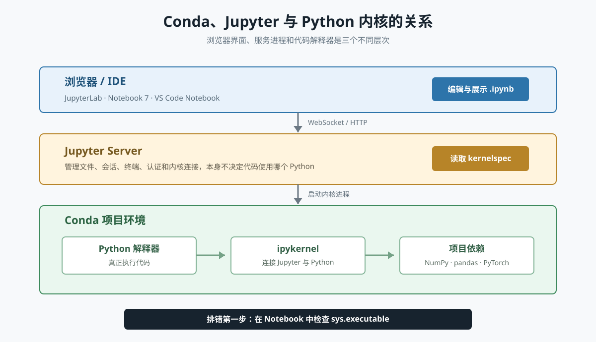
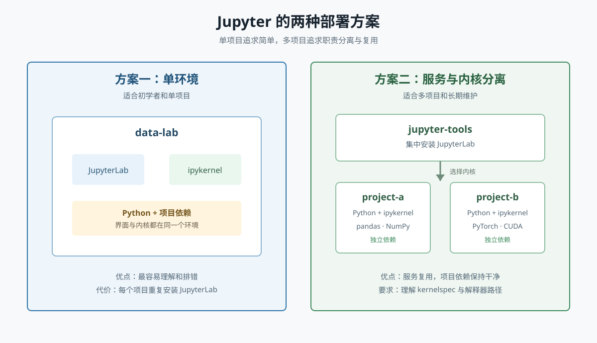
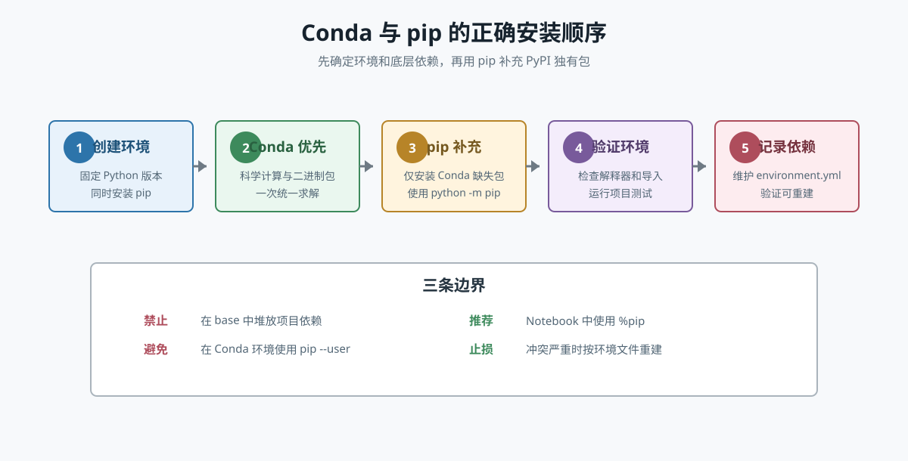
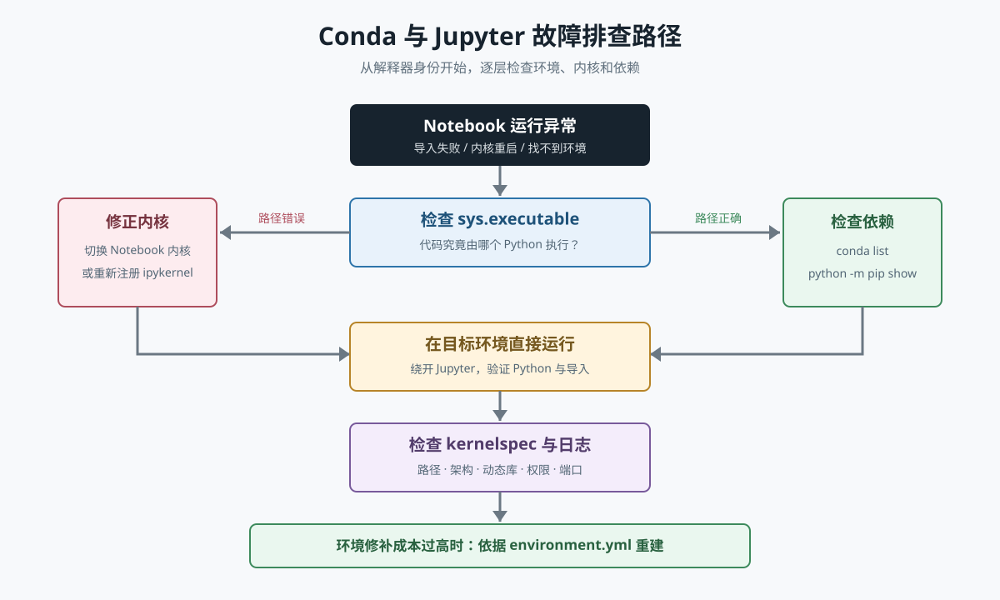

搭建 Conda + Jupyter 开发环境：Windows、macOS 与 Linux 完整指南
本文从零搭建一套可复现、可维护的 Python 数据分析与交互式开发环境，详细说明 Windows、macOS 和 Linux 的安装差异，并讲清楚 Conda 环境、Jupyter 服务与 Python 内核之间的关系。
文中默认使用命令行操作。初学者可以直接按“快速路线”执行；需要维护多个项目时，建议采用后文的“服务环境与项目内核分离”方案。
一、先理解 Conda、Jupyter 与内核
在安装之前，必须先分清几个经常被混为一谈的组件。
| 组件 | 作用 | 是否执行 Notebook 代码 |
|---|---|---|
| Conda | 管理 Python 版本、依赖包和隔离环境 | 否 |
| JupyterLab | 提供浏览器中的文件、编辑器和 Notebook 界面 | 否 |
| Jupyter Server | 管理会话、文件、终端和内核连接 | 否 |
| IPython | Python 的交互式运行环境 | 是 |
| ipykernel | 让某个 Python 环境能作为 Jupyter 内核运行 | 是 |
| kernelspec | 告诉 Jupyter“内核名称、启动命令和 Python 路径” | 否 |

1. Conda 是什么
Conda 同时承担两种职责：
- 环境管理器：为不同项目创建相互隔离的 Python 与依赖环境；
- 包管理器：安装 Python 包以及 CUDA、C/C++ 动态库等非 Python 依赖。
例如：
base
├── project-a：Python 3.11 + pandas 2.x
├── project-b：Python 3.12 + PyTorch
└── legacy-app：Python 3.9 + 旧版依赖
每个环境拥有独立的解释器和依赖，不需要反复覆盖系统 Python。
2. Jupyter 是什么
Jupyter 是一套交互式计算体系。常用前端包括：
- JupyterLab：功能完整，支持 Notebook、终端、文本编辑器和扩展，推荐使用；
- Jupyter Notebook 7：界面更聚焦 Notebook；
- VS Code Notebook：由 VS Code 提供界面，仍需选择正确的 Python 内核。
.ipynb 文件只保存代码单元、Markdown、输出结果和元数据，它本身不携带 Python 解释器与完整依赖。
3. 为什么“启动 Jupyter 的环境”不一定是“执行代码的环境”
假设在 jupyter-tools 环境启动 JupyterLab：
conda activate jupyter-tools
jupyter lab
页面中仍然可以选择 project-a 内核。此时：
- JupyterLab 服务进程来自
jupyter-tools； - Notebook 中的代码由
project-a的 Python 执行； import pandas查找的是project-a中的包；- 在终端里执行裸
pip，却可能修改另外一个环境。
这正是大量“终端中可以导入，Notebook 中却找不到包”问题的根源。
二、选择 Conda 发行版
Conda 不是只能通过 Anaconda Distribution 获得。常见选择如下。
| 发行版 | 默认内容 | 默认软件源 | 体积 | 适合人群 |
|---|---|---|---|---|
| Miniconda | Conda、Python 和少量基础包 | Anaconda 默认源 | 较小 | 希望按需安装的个人用户 |
| Miniforge | Conda、Mamba 和基础包 | conda-forge | 较小 | 偏好社区源、跨架构或组织使用 |
| Anaconda Distribution | 数据科学常用包、Navigator 等 | Anaconda 默认源 | 较大 | 希望开箱即用且接受较多预装包的初学者 |
本文以 Miniconda 为主要示例，Miniforge 的安装与日常命令基本相同。
1. 推荐策略
- 个人学习、希望最少预装内容：Miniconda；
- 主要使用
conda-forge、重视 Apple Silicon 与多架构支持：Miniforge； - 不想手动安装常见科学计算包：Anaconda Distribution；
- 企业或组织环境：先审查软件源服务条款，再决定使用
defaults还是conda-forge。
Miniconda 和 Anaconda Distribution 默认连接 Anaconda Repository。组织使用前应核对最新服务条款和授权要求；Miniforge 默认使用社区维护的
conda-forge。
2. 不建议直接使用系统 Python
系统 Python 可能被操作系统组件依赖。在 Linux 和 macOS 中使用 sudo pip install 修改系统环境，容易导致包管理器冲突、权限混乱或系统工具损坏。
推荐边界：
操作系统 Python：留给系统
Conda base：只维护 Conda 自身
项目环境：安装项目依赖
Jupyter tools：可选，集中安装 JupyterLab
三、安装前检查
1. 确认 CPU 架构
下载与 CPU 架构不匹配的安装包，可能无法运行，或只能通过模拟层低效运行。
Windows PowerShell
$env:PROCESSOR_ARCHITECTURE
常见结果：
AMD64：选择 Windows x86_64；ARM64：优先选择 Windows ARM64 安装器；若发行版暂未提供，再评估 x86_64 模拟。
macOS
uname -m
arm64：Apple Silicon，选择MacOSX-arm64；x86_64：Intel Mac，选择MacOSX-x86_64。
Linux
uname -m
x86_64：选择Linux-x86_64；aarch64或arm64：选择Linux-aarch64；- 其他架构：先确认所选发行版是否提供安装器和软件包。
2. 规划安装位置
Conda 不要求管理员或 root 权限。推荐安装到当前用户可写目录。
| 系统 | 常见位置 |
|---|---|
| Windows | C:\Users\<用户名>\miniconda3 |
| macOS | /Users/<用户名>/miniconda3 |
| Linux | /home/<用户名>/miniconda3 |
注意事项：
- 安装路径尽量避免特殊符号；
- Windows 下部分旧工具对空格和非 ASCII 路径支持不佳；
- 不要为了省事安装到系统目录后长期使用管理员权限；
- 预留足够空间，环境和包缓存可能增长到数 GB 甚至数十 GB。
3. 从官方地址下载
- Conda 安装指南：https://docs.conda.io/projects/conda/en/latest/user-guide/install/
- Miniconda：https://www.anaconda.com/docs/getting-started/miniconda/install
- Miniforge：https://conda-forge.org/download/
- Jupyter 安装指南：https://jupyter.org/install
不要从不可信的网盘、论坛附件或脚本镜像下载安装器。
4. 校验 SHA-256
下载后，将计算结果与官方发布的 SHA-256 比较。任何一个字符不同都不应继续安装。
Windows PowerShell
Get-FileHash .\Miniconda3-latest-Windows-x86_64.exe -Algorithm SHA256
macOS
shasum -a 256 Miniconda3-latest-MacOSX-arm64.sh
Linux
sha256sum Miniconda3-latest-Linux-x86_64.sh
latest安装器便于个人安装，但自动化部署应锁定明确版本和校验值，避免同一脚本在不同时间得到不同结果。
四、Windows 安装
Windows 推荐使用图形安装器，再通过 Miniconda Prompt 完成初始化。
1. 图形界面安装
- 下载与架构匹配的
.exe安装器； - 双击运行安装程序；
- 安装范围选择 Just Me；
- 安装位置使用当前用户目录；
- 完成安装后，从开始菜单打开 Miniconda Prompt。
安装选项建议：
| 选项 | 建议 | 原因 |
|---|---|---|
| Add Miniconda to PATH | 不勾选 | 避免覆盖系统中已有 Python 与命令 |
| Register Miniconda as default Python | 按需，通常不勾选 | IDE 可以单独选择解释器，无需接管全局 Python |
| Clear package cache | 初次安装无需 | 后续可用 Conda 命令清理 |
不加入系统 PATH 并不影响使用。Miniconda Prompt 会加载所需环境。
2. 验证安装
在 Miniconda Prompt 中执行：
conda --version
conda info
conda list
where conda
where python
输出路径应指向 Miniconda 安装目录。
3. 初始化 PowerShell
conda init powershell
关闭全部 PowerShell 窗口，再重新打开。
验证：
conda info --envs
conda activate base
python --version
Get-Command python
若 PowerShell 报“无法加载配置文件，因为系统禁止运行脚本”，先查看策略：
Get-ExecutionPolicy -List
仅为当前用户设置较温和的策略：
Set-ExecutionPolicy -Scope CurrentUser RemoteSigned
这会修改当前用户的脚本执行策略，应理解组织安全要求后再执行。受管设备应由管理员按策略处理，不要绕过企业控制。
4. 初始化 CMD
若主要使用传统命令提示符：
conda init cmd.exe
关闭并重新打开 CMD 后测试：
conda activate base
where python
5. Windows 静默安装
适用于自动化部署。参数区分大小写，/D 必须放在最后，且安装路径不加引号。
start /wait "" Miniconda3-latest-Windows-x86_64.exe ^
/InstallationType=JustMe ^
/RegisterPython=0 ^
/AddToPath=0 ^
/S ^
/D=%UserProfile%\miniconda3
自动化脚本不要长期使用 latest 文件名，应锁定安装器版本、下载地址和 SHA-256。
6. Git Bash
先在 Miniconda Prompt 中初始化 Bash：
conda init bash
重新打开 Git Bash。若仍无法识别，可直接调用安装目录中的初始化脚本进行诊断：
source ~/miniconda3/etc/profile.d/conda.sh
conda activate base
具体路径取决于 Git Bash 如何映射 Windows 用户目录。
五、macOS 安装
macOS 需要先区分 Apple Silicon 与 Intel。
1. 确认架构
uname -m
Apple Silicon 应优先安装原生 arm64 版本。只有依赖明确不支持 ARM 时，才考虑通过 Rosetta 使用 osx-64 环境。
2. 使用 Shell 安装器
以下以 Apple Silicon 为例：
cd ~/Downloads
shasum -a 256 Miniconda3-latest-MacOSX-arm64.sh
bash Miniconda3-latest-MacOSX-arm64.sh
Intel Mac 替换为：
bash Miniconda3-latest-MacOSX-x86_64.sh
安装过程：
- 按 Enter 阅读协议；
- 输入
yes接受协议； - 确认安装目录；
- 同意运行
conda init； - 关闭并重新打开终端。
3. 初始化 Zsh
现代 macOS 默认使用 Zsh：
~/miniconda3/bin/conda init zsh
exec zsh
验证：
conda --version
conda info
which conda
which python
4. 使用 Bash
~/miniconda3/bin/conda init bash
exec bash
5. Apple Silicon 与 Intel 依赖
原生 ARM 环境：
conda create -n native-py python=3.12
只有确有需要时才创建 Intel 环境：
conda create --platform osx-64 -n intel-py python=3.11
注意：
--platform应在创建环境时指定；- Intel 包通常需要 Rosetta 2；
- 不要在同一个环境中混装
osx-arm64与osx-64包； - 首选原生 ARM 依赖，模拟环境仅作为兼容方案；
- 跨平台求解成功不代表二进制能在当前系统原生运行。
检查当前 Conda 平台：
conda info | grep platform
六、Linux 安装
以下步骤适用于常见桌面版和服务器发行版，如 Ubuntu、Debian、Fedora、Rocky Linux 等。Conda 用户级安装通常与系统包管理器无关。
1. 确认架构并下载对应安装器
uname -m
以 x86_64 为例：
cd /tmp
curl -fLO https://repo.anaconda.com/miniconda/Miniconda3-latest-Linux-x86_64.sh
ARM64 使用：
curl -fLO https://repo.anaconda.com/miniconda/Miniconda3-latest-Linux-aarch64.sh
若系统没有 curl，可使用 wget：
wget https://repo.anaconda.com/miniconda/Miniconda3-latest-Linux-x86_64.sh
下载前应从官方页面取得当前 SHA-256，随后校验：
sha256sum Miniconda3-latest-Linux-x86_64.sh
2. 交互式安装
bash Miniconda3-latest-Linux-x86_64.sh
安装完成后重新打开终端，或加载配置：
source ~/.bashrc
3. 初始化不同 Shell
Bash
~/miniconda3/bin/conda init bash
exec bash
Zsh
~/miniconda3/bin/conda init zsh
exec zsh
Fish
fish_add_path ~/miniconda3/condabin
conda init fish
exec fish
查看 conda init 将修改什么，而不真正写入：
conda init --dry-run --verbose bash
撤销初始化：
conda init --reverse bash
4. 无交互安装
适合服务器、CI 和开发容器：
bash Miniconda3-latest-Linux-x86_64.sh \
-b \
-p "$HOME/miniconda3"
"$HOME/miniconda3/bin/conda" init bash
参数含义：
-b：批处理模式，不进入交互提示；-p：指定安装目录。
自动化环境中也可以不执行 conda init，而直接使用完整路径或 conda run：
"$HOME/miniconda3/bin/conda" create -y -n notebook python=3.12
"$HOME/miniconda3/bin/conda" run -n notebook python --version
这种方式不会修改 Shell 配置，更适合 CI。
5. 服务器权限原则
- 不使用
sudo bash Miniconda...进行个人安装； - 不把个人环境放入
/usr； - 多用户共用环境时，需要统一规划只读基础环境和可写缓存；
- 生产服务器不要直接暴露无认证的 Jupyter；
- 避免在网络文件系统中创建大量环境，包链接和小文件操作可能很慢。
七、安装后的基础配置
1. 更新 Conda
conda update -n base conda
先查看计划，再确认执行。自动化场景可使用 -y，交互使用时不建议盲目跳过变更审查。
2. 禁止自动激活 base
默认终端前缀可能出现 (base)。为避免误把包安装到 base：
conda config --set auto_activate_base false
重新打开终端后生效。需要时再执行：
conda activate base
3. 查看配置来源
conda config --show-sources
conda config --show
常见配置文件是用户目录下的 .condarc。Windows 中也可能显示其他层级的配置来源。
4. 软件源策略
同一个环境应尽量保持渠道一致，避免混合渠道产生 ABI 或依赖冲突。
如果决定使用 conda-forge：
conda config --add channels conda-forge
conda config --set channel_priority strict
检查：
conda config --show channels
conda config --show channel_priority
如果使用 Miniforge，通常已经预配置 conda-forge。不要在不了解影响时反复调整全局 channel 顺序。
5. 基础诊断
conda info
conda config --show-sources
conda info --envs
conda list -n base
八、推荐方案一：单项目快速搭建
该方案把 JupyterLab 和项目依赖装在同一个环境中，概念简单，适合第一次使用。

1. 创建环境
本文示例固定 Python 的主次版本，不直接追随最新版本：
conda create -n data-lab python=3.12 pip
激活：
conda activate data-lab
确认解释器：
python --version
python -c "import sys; print(sys.executable)"
2. 安装 JupyterLab 与常用依赖
使用默认 channel：
conda install jupyterlab ipykernel numpy pandas matplotlib
明确使用 conda-forge：
conda install -c conda-forge jupyterlab ipykernel numpy pandas matplotlib
不要在同一条指南中一会儿使用 defaults、一会儿使用 conda-forge。选定渠道后尽量保持一致。
3. 启动 JupyterLab
切换到项目目录：
Windows PowerShell
Set-Location D:\workspace\my-data-project
jupyter lab
macOS / Linux
cd ~/workspace/my-data-project
jupyter lab
默认会：
- 在本机启动 Jupyter Server；
- 监听本地回环地址；
- 打开浏览器；
- 显示当前目录中的文件。
若不希望自动打开浏览器：
jupyter lab --no-browser
指定端口：
jupyter lab --port 8890
4. Notebook 中验证环境
新建 Notebook 后执行：
import os
import sys
import platform
print("Python:", sys.version)
print("解释器:", sys.executable)
print("系统:", platform.platform())
print("工作目录:", os.getcwd())
再验证依赖：
import numpy as np
import pandas as pd
import matplotlib
print("NumPy:", np.__version__)
print("pandas:", pd.__version__)
print("Matplotlib:", matplotlib.__version__)
sys.executable 应位于 data-lab 环境目录。
5. 停止服务
在启动 JupyterLab 的终端中按：
Ctrl + C
根据提示确认关闭。关闭浏览器标签页并不会自动停止服务器。
九、推荐方案二：Jupyter 服务与项目内核分离
维护多个项目时，不必在每个环境重复安装完整 JupyterLab。推荐：
jupyter-tools：只安装 JupyterLab
project-a：安装项目依赖 + ipykernel
project-b：安装项目依赖 + ipykernel
1. 创建 Jupyter 服务环境
conda create -n jupyter-tools python=3.12 jupyterlab
2. 创建项目环境
conda create -n project-a python=3.12 pip ipykernel numpy pandas matplotlib
conda activate project-a
3. 注册项目内核
python -m ipykernel install \
--user \
--name project-a \
--display-name "Python (project-a)"
Windows CMD 不支持反斜杠续行，可写成一行：
python -m ipykernel install --user --name project-a --display-name "Python (project-a)"
参数含义：
| 参数 | 含义 |
|---|---|
--user |
将 kernelspec 注册到当前用户范围 |
--name |
内部唯一名称，建议只用字母、数字、连字符 |
--display-name |
Jupyter 界面中显示的名称 |
4. 启动集中式 JupyterLab
conda activate jupyter-tools
jupyter lab
新建 Notebook 时选择 Python (project-a)。
5. 检查内核
jupyter kernelspec list
在 Notebook 中验证：
import sys
print(sys.executable)
路径必须指向 project-a，而不是 jupyter-tools。
6. 删除内核
先查看名称：
jupyter kernelspec list
再删除：
jupyter kernelspec remove project-a
删除 kernelspec 只移除 Jupyter 菜单项，不会删除 Conda 环境。
7. 环境删除前先清理内核
jupyter kernelspec remove project-a
conda remove -n project-a --all
否则 Jupyter 中可能残留一个指向不存在 Python 的“幽灵内核”。
十、Conda 环境日常管理
1. 创建与激活
conda create -n my-project python=3.12 pip
conda activate my-project
2. 退出环境
conda deactivate
3. 查看环境
conda env list
conda info --envs
星号表示当前激活环境。
4. 查看与搜索包
conda list
conda list pandas
conda search pandas
5. 安装、更新与删除包
conda install pandas
conda update pandas
conda remove pandas
指定环境而不激活：
conda install -n my-project pandas
6. 克隆环境
conda create -n my-project-test --clone my-project
适合升级大型依赖前做临时验证，但不应代替可版本控制的环境定义文件。
7. 删除环境
先退出目标环境：
conda deactivate
conda remove -n my-project --all
8. 清理缓存
先查看可清理内容：
conda clean --dry-run --all
确认后：
conda clean --all
缓存可以加速新环境创建。磁盘空间不紧张时，无需频繁清理。
十一、正确处理 Conda 与 pip
Conda 和 pip 可以共存，但需要明确规则。

1. 推荐顺序
- 创建独立 Conda 环境；
- 优先用 Conda 安装二进制和科学计算依赖；
- Conda 找不到的包，再使用该环境的 pip；
- pip 安装完成后，尽量不要再大规模修改底层 Conda 依赖；
- 环境冲突严重时，依据环境文件重建，不要无限修补。
2. 永远确认 pip 属于哪个 Python
推荐：
python -m pip install package-name
不推荐直接假设：
pip install package-name
检查：
Windows
where.exe python
where.exe pip
python -m pip --version
macOS / Linux
which python
which pip
python -m pip --version
3. Notebook 中安装包
优先使用 IPython 的 %pip 魔法：
%pip install package-name
需要使用 Conda 时：
%conda install pandas
相比 !pip install，%pip 更能确保安装目标与当前内核一致。安装涉及底层库或导入缓存时，完成后重启内核。
4. 避免用户级 pip 污染
不要在 Conda 环境中随意执行：
pip install --user package-name
--user 会把包安装到用户级目录，可能越过 Conda 环境边界，造成环境不可复现。
十二、环境复现与版本锁定
“我的电脑能运行”不是完成标准。项目应包含环境定义。
1. 手写 environment.yml
推荐维护一个简洁、以直接依赖为主的文件：
name: data-lab
channels:
- conda-forge
dependencies:
- python=3.12
- jupyterlab=4
- ipykernel
- numpy=2
- pandas=2
- matplotlib=3
- pip
- pip:
- some-pypi-only-package==1.2.3
设计原则：
- 锁定 Python 主次版本；
- 核心库至少锁定主版本，生产项目应更严格；
- Conda 依赖写在
pip之前； pip:中只放 Conda 渠道没有或必须从 PyPI 安装的包；- 不把本机路径、密钥和临时开发包写入共享文件。
2. 从文件创建
兼容性最广的命令：
conda env create -f environment.yml
激活：
conda activate data-lab
更新已有环境：
conda env update -n data-lab -f environment.yml --prune
--prune 会删除文件中不再声明的 Conda 包，执行前应检查变更和备份重要环境。
3. 导出环境
较新版本 Conda 支持：
conda export --file environment.yml
传统兼容命令：
conda env export --from-history > environment.yml
--from-history 主要记录主动安装的顶层 Conda 依赖，更适合跨平台共享，但可能不完整记录 pip 包，需要人工补充检查。
完整快照：
conda env export > environment-full.yml
完整快照包含大量平台相关的传递依赖和构建编号，适合同平台诊断，不适合作为唯一的跨平台项目定义。
4. 精确复现与跨平台复现的区别
| 目标 | 推荐文件 | 特点 |
|---|---|---|
| 跨 Windows、macOS、Linux | 精简 environment.yml |
声明直接依赖，允许各平台求解 |
| 同平台近似复现 | 完整环境 YAML | 包含传递依赖，约束较多 |
| 同架构精确复现 | explicit 规格或锁文件 | 含具体构建与 URL，不可直接跨平台 |
不要把 Windows 导出的底层构建列表直接当成 macOS 或 Linux 的通用环境定义。
5. 跨平台项目结构
my-project/
├── environment.yml
├── notebooks/
├── src/
├── data/
│ └── README.md
├── .gitignore
└── README.md
.gitignore 示例：
.ipynb_checkpoints/
__pycache__/
*.py[cod]
.env
.venv/
data/raw/
不要把 Conda 环境目录提交到 Git。提交环境定义，而不是整个解释器和 site-packages。
十三、VS Code 与 Jupyter
1. 安装扩展
通常需要：
- Microsoft Python 扩展；
- Microsoft Jupyter 扩展。
2. 选择解释器
打开命令面板：
Python: Select Interpreter
选择目标 Conda 环境。
3. 选择 Notebook 内核
打开 .ipynb，点击右上角内核选择器，选择对应环境或已注册的 kernelspec。
编辑器解释器与 Notebook 内核是两个选择，必须分别检查。
4. VS Code 找不到环境
先在外部终端验证：
conda env list
conda run -n project-a python -c "import sys; print(sys.executable)"
然后：
- 重启 VS Code；
- 重新扫描解释器；
- 从已激活环境启动 VS Code；
- 确认远程窗口、WSL 窗口和本机窗口没有混淆。
从环境启动：
conda activate project-a
code .
十四、Windows、WSL 与容器边界
Windows 本机、WSL 和 Docker 是三个不同的运行环境。
| 场景 | Conda 安装位置 | Python 路径形式 |
|---|---|---|
| Windows 本机 | Windows 文件系统 | C:\Users\...\miniconda3\... |
| WSL | Linux 文件系统 | /home/user/miniconda3/... |
| Docker 容器 | 容器文件系统 | 由镜像定义 |
不要直接让 WSL 使用 Windows Conda 的 Python，也不要反过来使用。二者的二进制格式、路径、动态库和权限模型不同。
推荐：
- Windows 开发：安装 Windows 版 Conda；
- WSL 开发：在 WSL 内独立安装 Linux 版 Conda；
- VS Code Remote - WSL：选择 WSL 内的解释器；
- 容器开发：在 Dockerfile 或镜像中创建环境；
- Notebook 文件可以共享，但解释器与依赖必须在各自系统中重建。
十五、Jupyter 安全与远程访问
1. 本机使用
默认只在本机访问：
jupyter lab --ip 127.0.0.1
不要为了方便关闭 token、密码或身份验证。
查看正在运行的服务：
jupyter server list
2. 远程服务器推荐使用 SSH 隧道
服务器上启动：
jupyter lab \
--no-browser \
--ip 127.0.0.1 \
--port 8888
本机建立隧道：
ssh -L 8888:127.0.0.1:8888 user@server.example.com
然后在本机浏览器访问：
http://127.0.0.1:8888
这样 Jupyter 仍只监听服务器回环地址，外部访问通过加密 SSH 隧道完成。
3. 不安全示例
不要在公网主机上直接执行类似配置：
jupyter lab \
--ip 0.0.0.0 \
--ServerApp.token='' \
--ServerApp.password=''
这可能让任何能访问端口的人执行代码、读取文件和使用终端。
4. 团队与生产场景
多人使用不应共享一个个人 JupyterLab 进程。应考虑：
- JupyterHub；
- 反向代理与 HTTPS；
- 单点登录和访问控制；
- 每用户隔离环境；
- 资源配额；
- 审计、日志和密钥管理；
- 容器或调度平台隔离。
Notebook 具有执行任意代码的能力，应按开发服务器而不是静态文档处理。
十六、常见问题排查

1. conda: command not found 或“conda 不是内部命令”
先直接调用安装目录中的 Conda。
Windows
打开 Miniconda Prompt，执行：
conda init powershell
macOS / Linux
~/miniconda3/bin/conda --version
~/miniconda3/bin/conda init bash
Zsh 用户改成：
~/miniconda3/bin/conda init zsh
重新打开终端。
2. conda activate 提示先运行 conda init
conda init
更明确地指定 Shell：
conda init powershell
conda init bash
conda init zsh
conda init fish
执行后必须重新启动对应终端。
3. Notebook 中 ModuleNotFoundError
先在 Notebook 中检查：
import sys
print(sys.executable)
再在终端检查目标环境：
conda run -n project-a python -c "import sys; print(sys.executable)"
conda list -n project-a
如果路径不同：
- 切换 Notebook 内核；
- 或在目标环境安装并注册
ipykernel； - 不要先在多个环境反复安装同一个包。
4. Jupyter 中看不到新环境
conda activate project-a
conda install ipykernel
python -m ipykernel install \
--user \
--name project-a \
--display-name "Python (project-a)"
jupyter kernelspec list
重启 JupyterLab 后再检查。
5. 内核不断重启
在目标环境直接测试：
conda activate project-a
python -c "import ipykernel; print(ipykernel.__version__)"
python -m ipykernel --version
再查看内核定义：
jupyter kernelspec list
jupyter kernelspec list --json
重点检查：
- kernelspec 中的 Python 路径是否存在；
- 环境是否被移动或删除；
ipykernel、jupyter_client、pyzmq是否损坏；- 原生扩展是否因架构或动态库冲突崩溃；
- 杀毒软件、权限或磁盘空间是否阻止进程启动。
6. 端口被占用
直接换端口：
jupyter lab --port 8890
查看现有服务：
jupyter server list
Windows 查看端口
Get-NetTCPConnection -LocalPort 8888 -ErrorAction SilentlyContinue
macOS / Linux
lsof -i :8888
7. 浏览器没有自动打开
jupyter lab --no-browser
复制终端输出中包含 token 的本地 URL 到浏览器。不要把 token 发到公开聊天、工单或截图中。
8. Conda 求解很慢或发生依赖冲突
先查看渠道和优先级：
conda config --show channels
conda config --show channel_priority
处理顺序：
- 明确 Python 和关键库版本；
- 一次安装相关依赖，让求解器统一计算；
- 避免在同一环境混用多个不兼容渠道；
- 新建最小环境验证；
- 根据
environment.yml重建，而不是长期修补； - 不要把升级所有包当成第一反应。
9. SSL、代理或证书错误
不要通过长期关闭 SSL 验证来“解决”：
conda config --set ssl_verify false
这会降低供应链安全。正确方向是：
- 检查系统时间；
- 配置组织 HTTP/HTTPS 代理；
- 导入组织 CA 证书；
- 将
ssl_verify指向可信 CA 文件； - 请网络或安全管理员确认 TLS 检查设备配置。
查看相关配置：
conda config --show proxy_servers
conda config --show ssl_verify
10. pip 安装成功但导入失败
Notebook 内检查：
import sys
print(sys.executable)
然后执行：
%pip show package-name
如果安装位置不属于当前 sys.executable 对应环境，说明包装错了环境。切换内核或在当前内核中使用 %pip 安装。
11. Matplotlib 不显示图
Jupyter 中通常可直接显示：
import matplotlib.pyplot as plt
plt.plot([1, 2, 3], [1, 4, 9])
plt.show()
必要时：
%matplotlib inline
若远程服务器报 GUI 后端错误，使用非 GUI 后端或直接在 Notebook 中内嵌显示，不要依赖服务器桌面环境。
12. 环境名称存在但目录损坏
查看环境路径：
conda info --envs
若环境无法修复，优先使用环境定义重建：
conda remove -n broken-env --all
conda env create -f environment.yml
删除前确认其中没有未导出的依赖信息或重要文件。
十七、升级、备份与卸载
1. 升级前备份
conda env export -n data-lab > data-lab-full.yml
conda env export -n data-lab --from-history > data-lab-history.yml
jupyter kernelspec list
大型升级建议克隆环境验证：
conda create -n data-lab-upgrade --clone data-lab
2. 更新 JupyterLab
conda activate jupyter-tools
conda update jupyterlab
更新后检查：
jupyter lab --version
jupyter server --version
jupyter kernelspec list
3. Windows 卸载
- 导出需要保留的环境；
- 执行
conda init --reverse --all； - 在 Windows“已安装的应用”中卸载 Miniconda；
- 检查并按需删除用户配置与缓存。
不要误删项目代码和 Notebook。
4. macOS / Linux 卸载
先撤销 Shell 初始化：
conda init --reverse --all
关闭终端后，删除实际安装目录。假设安装在 ~/miniconda3：
rm -rf ~/miniconda3
可选的用户配置和缓存包括：
~/.condarc
~/.conda/
~/.continuum/
~/.jupyter/
~/.local/share/jupyter/
这些位置可能包含其他 Conda 发行版、Jupyter 配置或内核。逐项确认用途后再删除，不要直接批量清理。
十八、推荐的最终实践
1. 个人单项目
conda create -n data-lab python=3.12 pip
conda activate data-lab
conda install jupyterlab ipykernel numpy pandas matplotlib
jupyter lab
2. 多项目
# Jupyter 服务环境
conda create -n jupyter-tools python=3.12 jupyterlab
# 项目环境
conda create -n project-a python=3.12 pip ipykernel numpy pandas
conda activate project-a
python -m ipykernel install \
--user \
--name project-a \
--display-name "Python (project-a)"
# 启动服务
conda activate jupyter-tools
jupyter lab
3. 团队项目
项目仓库至少包含：
- 人工维护的
environment.yml； - 明确的 Python 版本；
- 统一的 Conda channel；
- Conda 与 pip 的依赖边界；
- 启动与内核注册说明；
- 数据集来源和下载方式；
- 不进入版本库的敏感信息清单；
- CI 中的环境重建验证。
4. 生产检查清单
- ☐ 安装器来自官方渠道并完成 SHA-256 校验；
- ☐ CPU 架构与安装器、依赖架构一致；
- ☐ Conda 安装在用户可写目录，不依赖管理员权限；
- ☐
base只维护 Conda，不承载项目依赖； - ☐ 每个项目拥有独立环境；
- ☐
python、pip和 Notebooksys.executable指向预期环境； - ☐ 内核名称清晰且能追溯到项目环境；
- ☐ 依赖通过
environment.yml维护； - ☐ 跨平台文件不包含平台专属构建列表；
- ☐ 优先使用一个统一 channel；
- ☐ Conda 包先安装，pip 包后安装；
- ☐ Notebook 中使用
%pip，避免误装到其他解释器； - ☐ Jupyter 只监听需要的网络接口；
- ☐ 远程访问使用 SSH 隧道、HTTPS 或受控网关；
- ☐ 未关闭 token、密码和 TLS 校验来规避问题；
- ☐ 升级前已导出环境并验证可重建；
- ☐ 密钥、token、原始敏感数据不保存在 Notebook 输出中。
十九、命令速查
| 任务 | 命令 |
|---|---|
| 查看 Conda 版本 | conda --version |
| 查看完整信息 | conda info |
| 查看环境 | conda env list |
| 创建环境 | conda create -n myenv python=3.12 pip |
| 激活环境 | conda activate myenv |
| 退出环境 | conda deactivate |
| 删除环境 | conda remove -n myenv --all |
| 查看包 | conda list |
| 安装包 | conda install package-name |
| 安装 PyPI 包 | python -m pip install package-name |
| 从 YAML 创建 | conda env create -f environment.yml |
| 更新环境 | conda env update -f environment.yml --prune |
| 导出直接依赖 | conda env export --from-history > environment.yml |
| 安装内核 | python -m ipykernel install --user --name myenv --display-name "Python (myenv)" |
| 查看内核 | jupyter kernelspec list |
| 删除内核 | jupyter kernelspec remove myenv |
| 启动 JupyterLab | jupyter lab |
| 不打开浏览器 | jupyter lab --no-browser |
| 查看 Jupyter 服务 | jupyter server list |
| 查看配置路径 | jupyter --paths |
| 清理 Conda 缓存 | conda clean --dry-run --all |
二十、参考资料
- Conda 安装指南：https://docs.conda.io/projects/conda/en/latest/user-guide/install/
- Conda 入门指南：https://docs.conda.io/projects/conda/en/latest/user-guide/getting-started.html
- Conda 环境管理：https://docs.conda.io/projects/conda/en/latest/user-guide/tasks/manage-environments.html
conda init参考：https://docs.conda.io/projects/conda/en/latest/commands/init.html- Conda 环境导出：https://docs.conda.io/projects/conda/en/latest/commands/export.html
- Miniforge：https://conda-forge.org/download/
- Jupyter 安装指南：https://jupyter.org/install
- Jupyter 内核指南：https://docs.jupyter.org/en/latest/install/kernels.html
- IPython 内核安装：https://ipython.readthedocs.io/en/stable/install/kernel_install.html
结语
一套稳定的 Conda + Jupyter 环境，关键不在于安装了多少工具，而在于边界是否清晰：
Conda 管理环境
JupyterLab 提供界面
ipykernel 连接项目 Python
environment.yml 保证环境可重建
遇到问题时，首先检查 Notebook 中的 sys.executable，再检查 Conda 环境、kernelspec 和包安装位置。只要解释器路径与环境边界正确，大多数“包已安装却无法导入”“Jupyter 找不到环境”的问题都能快速定位。